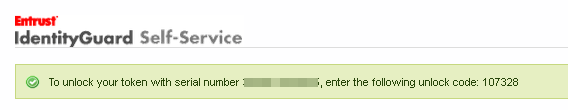

|
IdentityGuard Server 12.0 Administration Guide |
|
IdentityGuard Server 12.0 Administration Guide |
If you enter the wrong token PIN too many times, the token becomes locked. You can unlock the token using the token provider's Self-Service Web site, or by contacting the token provider's help desk.
To unlock a Entrust Datacard CR token through Self-Service
1. Log in to the token provider's Self-Service Web site.
2. On the Self-Administration Actions page, select I'd like to unlock my hardware token.
The Self-Service page displays your token serial number and asks you to confirm that you want to unlock it.
3. Click Yes.
4. Press
the On button  to turn
on the token. It displays an 8-digit Unlock Challenge
code.
to turn
on the token. It displays an 8-digit Unlock Challenge
code.
5. In Self-Service, on the Token Unlock screen, enter the code displayed on the token in the PIN Reset Code text box, and then click OK.
Self-Service displays the unlock code in the banner at the top of the page.

6. On your token, press OK to dismiss the Unlock Challenge screen. The screen displays Input Unlock.
7. Enter the PIN Reset Code from the Self-Service page in your token and click OK.
The token prompts you to enter a new PIN.
8. Enter the new 6-digit PIN and enter it again to confirm it.
The token screen confirms that the PIN is reset and you can continue to use the token.
9. Click Done on the Self-Service Web page.